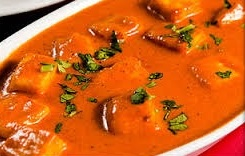

* click image to get the recipes.
Idli
Made of fermented black lentils and rice, accompanied with sambar and chutney (a vegetable stew made with toor dal and tamarind).

Aloo Gobi
Cauliflower and Potatoes cooked in Onion, Tomato and aromatic spices.

Paneer Butter
Delicious dish in which succulent cubes of Indian Cottage Cheese are cooked in thick creamy, tangy gravy.